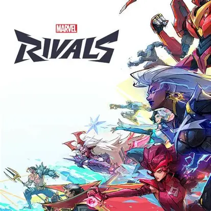
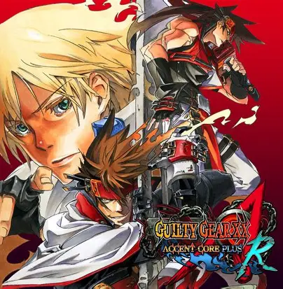
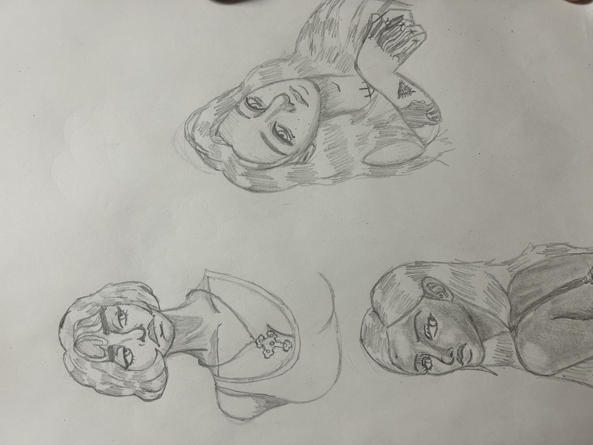
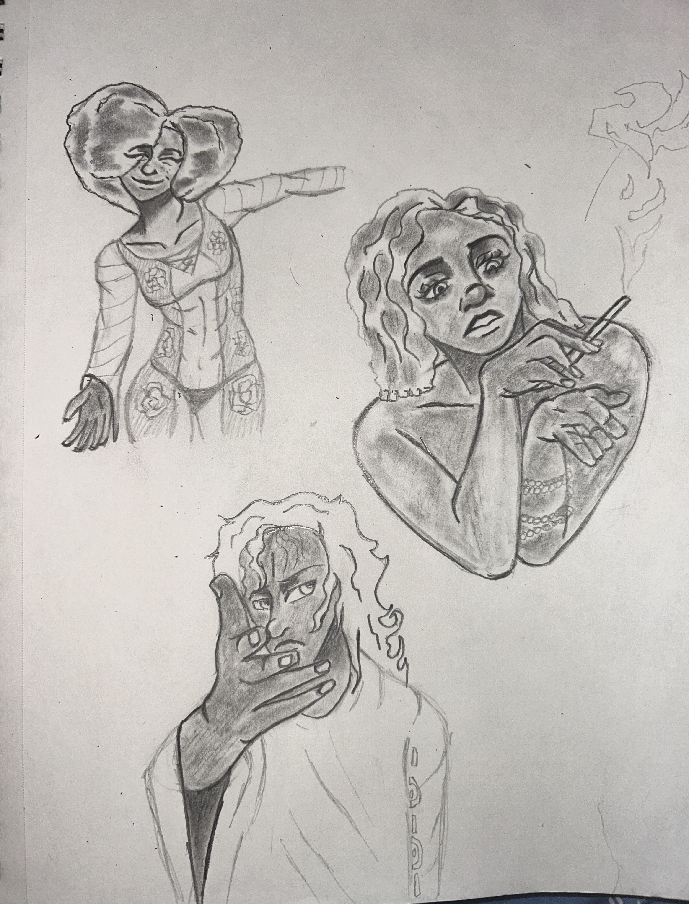

What I like to Do
The hobbies that I enjoy participating in are playing video games and drawing, and I rarely write stories
The hobbies that I enjoy participating in are playing video games and drawing, and I rarely write stories
The type of video games that I enjoy playing most often is Marvel Rivals, Warframe, Fortnite, Guilty Gear XX Accent Core, and Baldurs Gate 3 from time to time. I not only have fun when I play these games, but I also get inspired from them and try to implement those ideas into my own artwork.
 The types of things That I enjoy drawing are my own characters, people and other characters for practice, and creatures. The mediums I usually use are charcoal, pencil, Alcohol Markers, and digital.
 